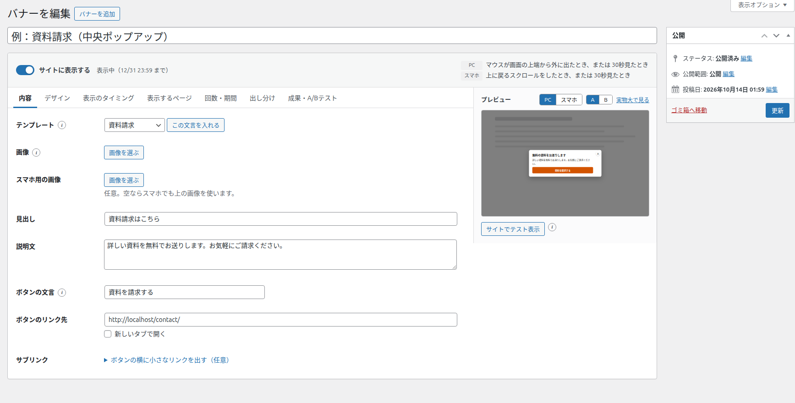
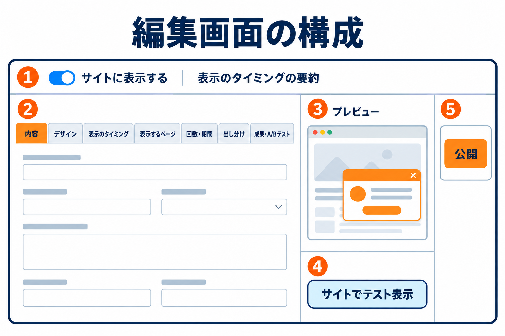
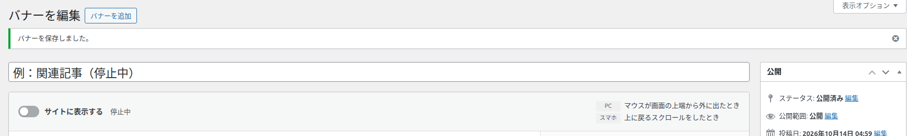
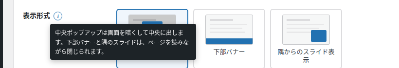
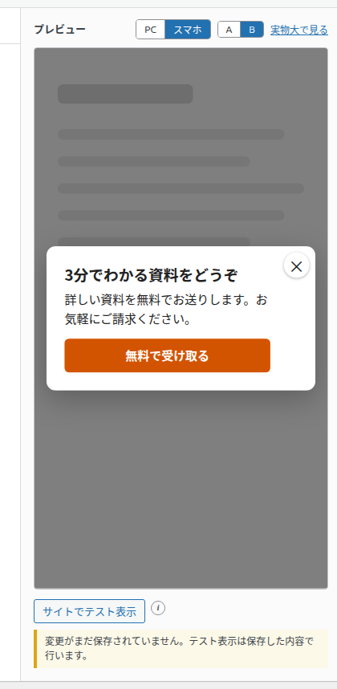
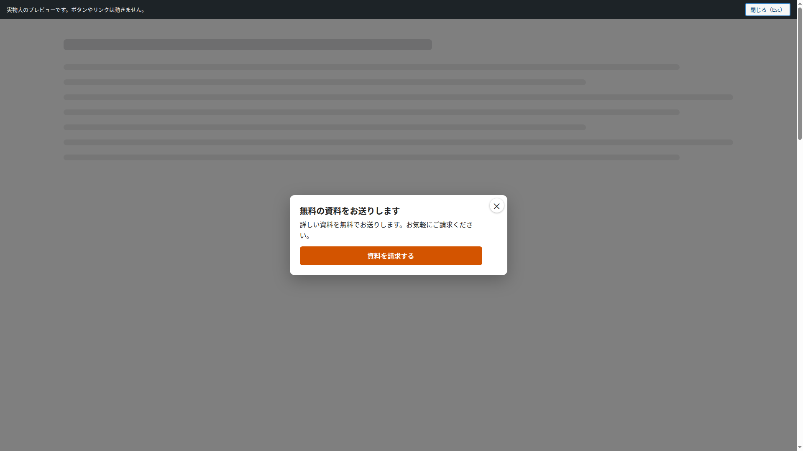
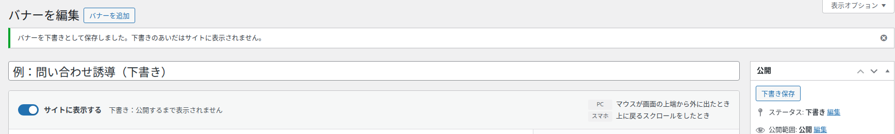

編集画面の見方
バナーの作成と編集を行う画面の構成と、プレビュー・保存・公開の操作を説明します。各タブの項目は、タブごとのページで説明します。
一覧の「バナーを追加」・バナーの名前・「編集」のどれかを押すと、この画面が開きます。左に設定のタブ、右にプレビューが並び、入力した内容がすぐにプレビューへ反映されます。

画面の地図

| 番号 | 場所 | 内容 |
|---|---|---|
| - | いちばん上の欄 | バナーの名前です。管理用で、サイトには表示されません。空欄の欄には「バナーの名前（管理用。サイトには表示されません）」と表示されています。 |
| ① | 上部の帯（左） | 「サイトに表示する」のスイッチと、いまの状態の文です。 |
| ① | 上部の帯（右） | PC・スマホのそれぞれで、どんなときに表示されるかを文章で表示します。タイミングを変えると、すぐに書き換わります。 |
| ② | 左 | 7つのタブ（内容・デザイン・表示のタイミング・表示するページ・回数・期間・出し分け・成果・A/Bテスト）と、その入力欄です。 |
| ③ | 右 | プレビューです。PC とスマホの見え方、A/B テストのパターンを切り替えられます。 |
| ④ | プレビューの下 | 「サイトでテスト表示」のボタンです。保存したあとに表示されます。 |
| ⑤ | 右端 | WordPress の「公開」のボックスです（下書き保存・公開・予約・ゴミ箱へ移動）。 |
サイトに表示する
このバナーをサイトに表示するかどうかのスイッチです。新しいバナーは最初からオンです。オフにして保存すると「停止中」になり、表示されなくなります（一覧の「停止する」「表示する」と同じです）。
| スイッチの横の文 | 意味 |
|---|---|
| 「公開」を押すと表示が始まります | まだ一度も保存していない新しいバナーです。 |
| 下書き：公開するまで表示されません | 下書きとして保存しています。 |
| 停止中 | 公開中で、スイッチがオフです。 |
| 表示中 / 表示中（月/日 時:分 まで） | 公開中で、いま表示されます。 |
| 表示予定（月/日 時:分 から） | 公開中ですが、掲載期間の前です。 |
| 掲載終了 | 公開中ですが、掲載期間が終わっています。 |

スイッチを切り替えただけでは反映されません。「公開」または「更新」を押して保存したときに反映されます。
表示のタイミングの要約（PC・スマホ）
上部の帯の右側に、「マウスが画面の上端から外に出たとき」「上に戻るスクロールをしたとき、または 30秒見たとき」のように、実際の表示の決まりを文章で表示します。一覧の「表示のタイミング」の列にも、同じ文が表示されます。その端末で使える条件がない場合は「表示されません（この端末で使える条件がありません）」と表示されます。
タブ
| タブ | 設定すること | 説明のページ |
|---|---|---|
| 内容 | テンプレート・画像・見出し・説明文・ボタン・サブリンク | 内容タブ |
| デザイン | 表示形式・隅の位置・幅・色・角の丸み・余白・文字の大きさ・背景の暗さ | デザインタブ |
| 表示のタイミング | 表示のきっかけ・組み合わせ・開いた直後に表示しない秒数 | 表示のタイミングタブ |
| 表示するページ | 表示する場所・表示しないページ | 表示するページタブ |
| 回数・期間 | 表示する回数・閉じたあとの日数・掲載期間・優先度 | 回数・期間タブ |
| 出し分け | ログイン・ユーザーの権限・流入元・参照元 | 出し分けタブ |
| 成果・A/Bテスト | 成果ページ・A/Bテスト・このバナーの集計へのリンク | 成果・A/Bテストタブ |
- タブはクリックのほか、タブを選んだ状態でキーボードの左右の矢印キーでも切り替えられます。
- ブラウザのタブを閉じるまでは、最後に開いていたタブを覚えています（保存したあとも同じタブが開きます）。
- 各項目の名前の横の (i) にマウスを乗せる（またはキーボードで選ぶ）と、その項目の説明が表示されます。
- 入力に誤りがあって保存できないときは、その項目のあるタブが自動で開きます。

プレビュー
保存する前の入力内容で、バナーの見た目を表示します。灰色の線は、ページの本文に見立てた飾りです。
| 操作 | 内容 |
|---|---|
| PC / スマホ | パソコンとスマホのどちらで見たときの表示かを切り替えます。スマホでは「スマホ用の画像」「スマホの幅」が使われます。 |
| A / B | 「成果・A/Bテスト」タブで A/B テストをオンにしたときだけ表示されます。どちらのパターンを表示するかを切り替えます。 |
| 実物大で見る | 画面全体に実物大で表示します。上の帯に「実物大のプレビューです。ボタンやリンクは動きません。」と表示されます。「閉じる（Esc）」・キーボードの Esc・バナーの × ・暗い背景のクリックで閉じます。 |


プレビューの中のボタンやリンクは、押しても動きません。リンク先を確かめるには、サイトでテスト表示を使います。
サイトでテスト表示
保存したバナーを、サイトのトップページで実際に表示して試すボタンです。まだ一度も保存していないバナーでは、ボタンの代わりに「保存すると、サイトで表示のタイミングを試せます。」と表示されます。保存していない変更があると、ボタンの下に「変更がまだ保存されていません。テスト表示は保存した内容で行います。」と表示されます。詳しくはサイトでテスト表示を参照してください。
保存と公開
右端の「公開」のボックスは、WordPress の投稿と同じ使い方です。
| ボタン | 内容 |
|---|---|
| 下書き保存 | 公開せずに保存します。下書きのあいだはサイトに表示されません。 |
| 公開（保存後は更新） | バナーを公開します。「サイトに表示する」がオンで、表示の条件を満たしていれば表示が始まります。公開したあとは「更新」で変更を保存します。 |
| 「すぐに公開する」の横の編集 | 公開する日時を予約できます。予約すると状態は「公開予約」になり、その日時に公開されます。 |
| ゴミ箱へ移動 | バナーをゴミ箱に移し、バナー一覧に戻ります。 |

| 保存したときのメッセージ | 意味 |
|---|---|
| バナーを保存しました。 | 公開または更新しました。 |
| バナーを予約しました。 | 公開する日時を予約しました。 |
| バナーを下書きとして保存しました。下書きのあいだはサイトに表示されません。 | 下書きとして保存しました。 |
保存していない変更があるままページを離れようとすると、ブラウザの確認が表示されます。離れると変更は失われます。